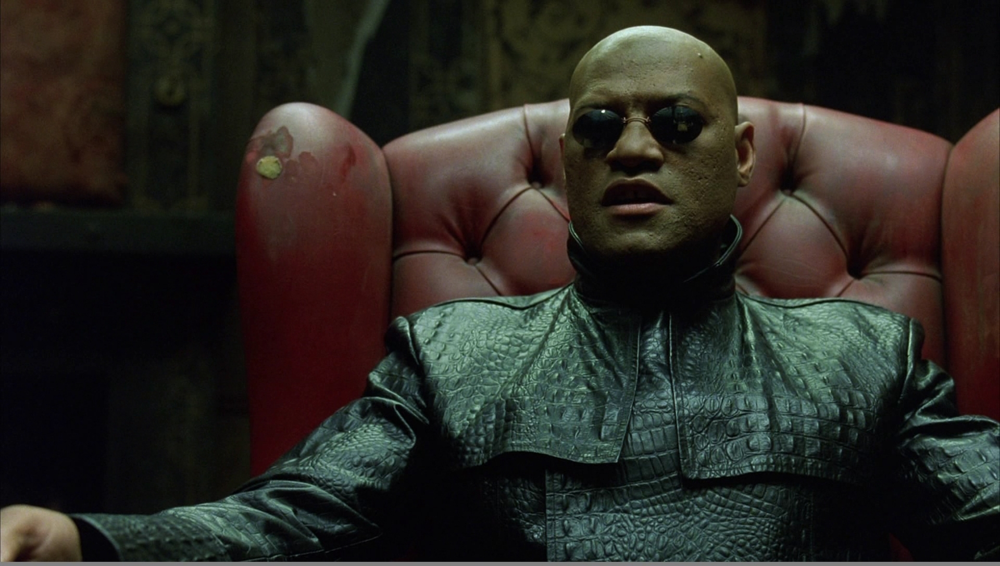

BUGWILD
or, RESOLVED
INCOMPLETE
WORKSFORME
WONTFIX
Lon Ingram
Lead Frontend Engineer, Waterfall Mobile
Observed:
The component is flat out broken.
Agenda
Bad things happen to good code
The first step is realizing you have a problem
Getting a report from your user to you
Talking to your user about bugs
Reanimator
Who is this guy?
Lead Frontend Engineer at Waterfall Mobile
JavaScript since 2006
Single-page apps since 2010
SpookyJS
Treehouse (no, not that Treehouse)
Bad things happen to good code
Why did you put the bugs in to begin with?
You're just gonna have to take them out later, you know.
Any software large enough
to be interesting has bugs.
The industry average is 15 - 50 errors/kloc1.
1) Steve McConnell. Code Complete, 2nd Edition, 2004.
But we got tests on tests on tests
its time to taste what you most fear /
continuous integration will not help you here
Tests demonstrate correct performance of specific tasks under highly constrained circumstances.
They do not prove the absence of bugs.
In fact, your users will encounter precisely those bugs that you did not write tests for.
Even if you had 100% coverage, (which you don't) testing cannot prove correctness.
Wear your damn seatbelt.
Best practices are necessary,
but not sufficient.
Your code will fail in the wild, and it will do so in ways that surprise you.
The first step is realizing you have a problem
This code is wrong. Why?
function poll() {
$.ajax('http://api.example.com/feed?count=30', {
success: function (data) {
var i, latest = activity[0].timestamp;
while (i < data.length) {
if (data[i].timestamp < latest) {
activity.unshift(data[i]);
i++;
}
}
setTimeout(poll, interval);
}
});
}
What if I told you there is no activity?
var i, latest = activity[0].timestamp;
Notify the users of failures as soon as possible, or their bug reports will often be unhelpful and misleading.
As we just saw, this is not always possible.
Failures come in two flavors
Recoverable: those you know how to recover from
Unrecoverable: those you do not
Unrecoverable failures are fatal
Your application is now in an undefined state, so the only appropriate thing to do is crash.
Render a modal notice and prompt the user to reload the page.
var $dialog = $('#dialog-crash');
$dialog.attr('title', 'Fatal Error');
$dialog.find('.heading').text('Example app v1.2.3 cannot continue:');
ExampleApp.crash = function (message, details) {
$dialog.find('.message').text(message);
$dialog.find('.details').text(details);
$('#dialog-crash').dialog({
dialogClass: 'no-close',
closeOnEscape: false,
resizable: false,
modal: true,
buttons: {
'Reload': function() {
location.reload();
}
}
});
};
In the case of recoverable failures, it may make sense to try again
If retrying fails, tell the user and return to a consistent state.
In other cases, retrying won't help.
Notify the user immediately and return to a consistent state.
Detecting failures in synchronous code
Always have an onerror handler
This is your last line of defense.
If you get here, you are crashing.
In an onerror handler, you get the error message and the line
number and URL where the error originated.
window.onerror = function (message, url, line) {
ExampleApp.crash(message, url + '\n' + 'line: ' + line);
};
Wrap all top-level synchronous code in try/catch blocks.
In an exception handler, you get an Error instance.
All browsers provide name and message.
Recent browsers provide stack, a string or array stack trace.
$(function () {
try {
ExampleApp.initialize();
} catch (e) {
ExampleApp.crash(e.name + ': ' + e.message, e.stack);
}
});
stacktracejs.com tries to provide stack traces in all browsers.
YMMV, but YOLO.
The rules of exception handling
Never catch an exception you can't do anything about.
If you catch an exception you cannot handle, always re-throw the same exception.
If you catch an exception in your top-level code that you cannot handle, crash.
Detecting failures in async code
Never throw in a callback.
Wrap code that can throw in try/catch blocks.
function safeCallback(fn) {
return function () {
try {
return fn.apply(this, arguments);
} catch (e) {
ExampleApp.crash(e.name + ': ' + e.message, e.stack);
}
};
}
When using callbacks, always provide an error handler
$.ajax('http://api.example.com/foo/bar', {
success: safeCallback(function (result) {
// ...
}),
error: safeCallback(function (jqXHR, textStatus, errorThrown) {
// ...
})
});
Always provide a fail handler when using promises
$.ajax('http://api.example.com/foo/bar').
done(safeCallback(function (result) {
// do something cool...
})).
fail(safeCallback(function (jqXHR, textStatus, errorThrown) {
// handle the error...
}));
How do I get a report?
This is the simplest solution.
Encode the report as a mailto link.
Ask the user to click it and email the report to you.
Pros:
- Everyone has email
- The user can add helpful context to the bug
Cons:
mailtolink limits vary wildly between browsers- Asking the user to cut and paste is error-prone
- Requires user action
Web form
This is a bit more complicated.
Render a bug report form and ask the user to complete it.
Pros:
- Payload capacity is far greater than
mailtolinks - The user can still add context
- No cut and paste
Cons:
- Server-side support necessary
- Still requires user action
Automatic reports
Rather than asking the user to send the report, the application can instead submit it automatically when a failure is detected.
Pros:
- Does not require user action
- Can return fixes or workarounds for known issues
Cons:
- Server-side support required
- No opportunity to gather context from the user
- Duplicates will be common
What I recommend
Send an automatic report immediately.
Notify the user of the failure and ask for feedback.
Append any feedback to the initial report.
Where do I send the report?
- Airbrake
- Debuggify
- Errorception
- JSLogger
- Muscula
- Sentry
You can also roll your own backend.
What do I put in the report?
At a minimum, a serialized representation of the error information the browser gives you.
Additional context and metadata can be helpful, but it's difficult to know what will be of use.
Data that was critical to diagnosing the last crash may be worthless today.
If a callback function fails, the original call stack is invaluable.
Capture the stack when the async method is called, attach it to the callback, and include it in the report.
If a call to an external API fails, it's useful to include:
- URL and HTTP method
- parameters or payload
- response
- status code
What do I tell the user?
The appropriate level of detail depends on the audience.
At a minimum, tell the user:
- How bad it is: have they lost data? can they continue?
- What, if anything, they can do
- Who to tell, how to tell them, and what they need to know
LOLJK. None of this will help.
You're still gonna get these:
Observed:
The component is flat out broken.
What we'd really like is to witness the failure first-hand.
Reanimator

Reanimator is inspired by Mugshot1

1) James Mickens, Jeremy Elson, and Jon Howell, Mugshot: Deterministic Capture and Replay for JavaScript Applications, in Proceedings of NSDI, USENIX, April 2010
Mugshot's Idea
Computers are deterministic: given the same inputs, they will always arrive at the same result.
Capture input to a log.
Later, run the program again and replay the captured input.
Demo
Status
This is a tech demo only.
Reanimator is not ready for production yet.
We are working on getting Reanimator ready to deploy in our app later this year.
Overhead
It's too early to know what Reanimator's overhead will be.
We expect it will be similar to Mugshot's.
- Log growth rate: 10 - 106 Kbps
- Logging overhead: 0.8 - 6.8%
Limitations
Browser quirks make 100% faithful replay difficult.
Visual effects that depend on events outside of JavaScript's purview
(:hover, e.g.) cannot be replayed.
Replay must be performed on the same code as capture occured.
Recap
Your code will fail, so prepare.
Detect failures as soon as possible.
Get the information you need to debug the problem.
Send a report.
Tell the user what's happening.
Thanks!
@lawnsea
lawnsea at gmail
lon at waterfallmobile
https://github.com/WaterfallEngineering/reanimator
https://github.com/lawnsea (slides here later today)
Waterfall is hiring:
http://waterfallmobile.com/company/